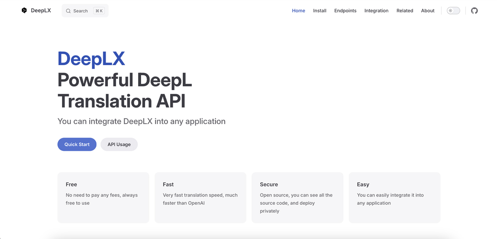
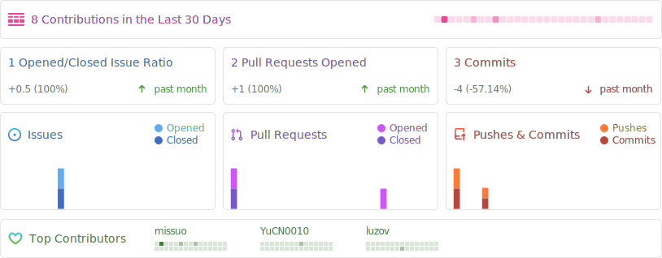

DeepLX
 项目首页
项目首页
DeepLX 是一个强大的免费 DeepL API，无需 Token 即可使用。它基于 DeepL 的免费服务，将其转换为本地 API，供第三方程序使用，如沉浸式翻译等。


 如何部署在线 DeeplX
如何部署在线 DeeplX
什么是 DeeplX
- DeepLX是一个精心设计的深度学习平台，它集成了最新的算法和技术，旨在简化模型构建、训练和部署的过程。它的目标是让开发者能够更专注于创新，而不是基础架构的复杂性。无论您是经验丰富的数据科学家还是初涉深度学习的新手，DeepLX都能为您提供所需的工具和资源。
功能列表
- 高度优化的计算库： DeepLX利用Go的并发能力，提供了高效的并行运算，从而大大加快了模型的训练速度。
- 简洁的API设计：通过易于理解的API，开发者可以轻松创建和管理神经网络结构。
- 容器化部署：与Docker紧密集成，DeepLX使您能够在任何环境中快速部署模型。
- 持续集成和测试：项目使用GitHub Actions进行自动化构建和测试，确保代码质量和稳定性。